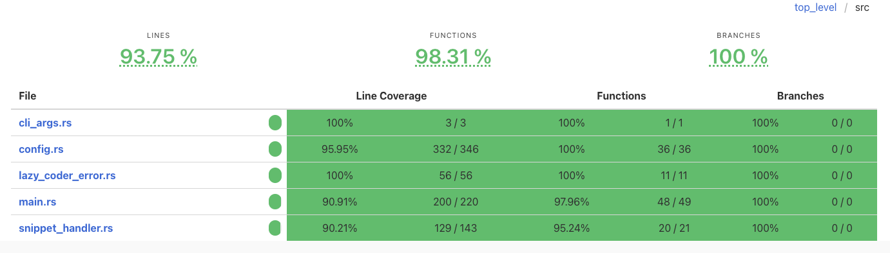
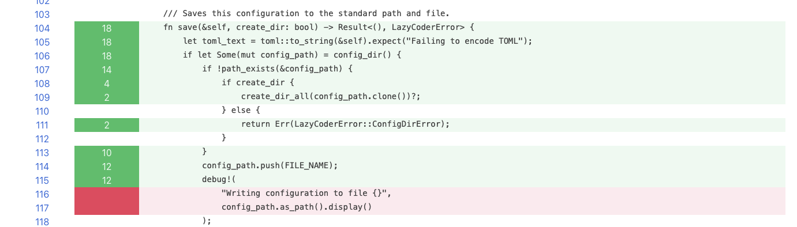

Rust unit testing: add-ons
Beyond cargo test

In my last article, I wrote about some builtin features of the tools that come with our Rust setup. They help you to produce better documentation, have more control of the tests you run, and debug tests/code when needed. The Rust ecosystem is very rich and active and people with other needs have contributed with really useful tools.
Today, I will write about two tools that might come in handy for you sooner or latter. There are many details in the following paragraphs, so fasten your USB-C cable and get ready!
Knowing your Coverage
Rant
Coverage is a good idea perverted by management and sales. <Mic 🎤 drop>
I don't want to preach to the choir and tell you how important tests are. If you are reading this, chances are that you are already a believer, or, at least, that you agree with the importance of having tests in place. So, it might be useful to know that all/most of the features implemented by our software are fully tested. Even better if we could ensure that the edge cases are tested too. But life ain't easy and there is no easy way to ensure that that is the case other than experience, hard work, and many what-if questions.
The best next thing seems to be test coverage. Test coverage is a way to measure that, or rather, to get an approximation to that measure by counting how many lines of our codebase are executed at least once by the tests. However, that is quite different from what we are trying to measure. The problem is that a line executed as part of a test is just that. It might not even be involved in the result of the test.
I am pretty sure that you have heard the story of great software developer that, when everybody in his team was paid by lines of code contributed the codebase, reported a huge negative number that was the result of some proper refactoring. It goes without saying that he didn't have to pay to his employer to improve the code. It was just the final prove that this method of measuring performance wasn't the right one. So it didn't take longer before it went out of fashion, thankfully. However, we still have people that get measured, among other things, by the test coverage of the codebase.
While this might not be that terrible if code reviews are required for every commit to the codebase. There is still a conflict of interests. Particularly if the requirement comes from an external party, a customer of a development shop.
Just between you and me: if you ever have to be paid by code coverage, know that if you invoke one after another the functions/methods of your code, even in a single test, you can get as close as you want to 100% coverage.
If you choose to do that, it is your responsibility. I do not promote that behavior. But… if you want to be freed from your sins, send me my part. 😅
Well, you have been warned. Still, if properly used, test coverage can be useful. So let me show you how to get those reports for your codebase.
Generate code coverage reports
The tool that we will be using for dealing with the code coverage information is grcov. It is integrated with cargo
and this is how we are going to use it. It also requires having llvm-tools to inspect the binaries1 produced by
our projects and it can be installed as a rustup component. This installation will make it available for all your
projects, not just this one.
rustup component add llvm-tools-preview
cargo install grcovWe need to run the tests to gather code coverage information, but it imposes some requirements on how we run them. Fortunately, those requirements only apply to when we want to refresh the data. Any other runs can be done with the same commands that we have been using so far.
- First, we must disable incremental compilation, but just to update the code coverage data. We will do it using an
environment variable (
CARGO_INCREMENTAL) and setting it to0. Please, don't change that behavior with thecargo.tomlkey (build.incremental), because that is more persistent and applies to any other time you run the tests. - Also, we need to enable support for instrumentation-based code coverage with another environment variable
(
RUSTFLAGS), that is used by the Rust compiler. We set it to-C instrument-coverage, which adds information to the compiler output about the different regions that have to be counted, and through LLVM intrinsics2, the compiler inserts code for counting execution at every function/method and at every branch3. - Finally, we have to tell it where to store the raw profile data that we will use to generate the report. The
environment variable
LLVM_PROFILE_FILEis responsible for defining those filenames and it uses some pattern strings that change the name depending on other data, like %p for the process ID, %h for the hostname or %m for the binary signature. If it specifies a path to a non-existent directory, the missing directory structure will be created.
The command that includes all this settings could be the following one.
CARGO_INCREMENTAL=0 RUSTFLAGS='-C instrument-coverage' LLVM_PROFILE_FILE='target/prof/cargo-test-%p-%m.profraw' cargo tIf this command line is too complex and you don't want to have to use the shell history to avoid making mistakes, you can use a shell alias. And if you add it to you shell configuration, you can use it in any other Rust project 🎉!
alias gathercov="CARGO_INCREMENTAL=0 RUSTFLAGS='-C instrument-coverage' LLVM_PROFILE_FILE='target/prof/cargo-test-%p-%m.profraw' cargo t"
The gathered data can be visualized after processing it with grcov. We add another directory inside of the target
one, where grcov will put the resulting report.
mkdir -p target/coverage/html
Then, we run grcov to produce the report in HTML format. grcov supports other formats, notably markdown, but check
the list if you need something else. Having an alias for this command too can also be useful.
grcov -s . -b target/debug/deps/ -t html --branch --ignore-not-existing -o target/coverage/html .The report can be visualized in your web browser. If you are in a macOS, it can be opened with the following command.
open target/coverage/html/index.htmlUnderstanding the report
The report has a tree of code files on the left side. You can expand directories and files by clicking on them.
For each file or directory there is a summary line, and at the top you have the totals for the current directory and its
subdirectories. The summary provides coverage information per line, per function, and per branch. For example, in the
following image, snippet_handler.rs has 129 out of 143 lines (90.21%) covered by at least one test. It has 21
functions/methods and 20 are executed by at least one test. Branches are always 0/0 (100%) because the compiler doesn't
support that yet.
This report will give you a better idea of which parts of your project need more love.
If you visit any of the files, you will be able to check which functions and lines are covered by tests. You can use this view to find out parts of the code that aren't covered yet, so you try and fix it.
A different test runner: nextest
Intro and installation
By default, cargo test builds a binary with the tests we have written, coordinated by libtest4 and then acts as test
runner. A test runner is responsible for finding the tests in the binary –selected ones or all of them,– organizing
them, run them, get their results and present a report to the developer. It does a good job at that and it has improved
a lot through the years.
But there are alternatives. Please meet nextest, the next-generation test runner for Rust. I believe one of its main
motivations was to be able to run tests in parallel, which is possible now, but was very hard at the time due to the
interface between cargo test and the test harness. But nextest goes above and beyond and offers many other advantages:
- It has a(n arguably) nicer interface.
- It is more flexible for selecting the tests that you want to run.
- It helps to detect flaky (–retries), leaky and slow tests.
- It can be configured with a file (
.config/nextest.toml) even with per-test overrides. - It is more performant using threads.
- It can distribute tests in partitions that run in different machines for CI.
It is an easy sell.
I recommend you to install nextest from source. This installation will make it available for all your projects, not just this one.
cargo install cargo-nextest --locked # Locked uses the versions of the crate stored on Cargo.lock in the repoSelecting and running tests
We can obtain the list of tests with the following command:
cargo nextest listwhich provides a list of tests organized by package (and indented) as you can see in this example of another project, which I have used to show something with a broader selection of tests.
ast2md:
lexer::tests::close_parenthesis_returns_token
lexer::tests::double_quoted_string_is_stored_in_token
lexer::tests::empty_input_returns_no_tokens
lexer::tests::equals_returns_token
lexer::tests::error_is_produced_with_expected_data
lexer::tests::identifier_name_is_stored_in_token
lexer::tests::only_spaces_input_returns_no_tokens
lexer::tests::open_parenthesis_returns_token
lexer::tests::single_quoted_string_is_stored_in_token
lexer::tests::square_bracketed_string_is_stored_in_token
lexer::tests::tokenize_declaration_accepts_at
lexer::tests::tokenize_declaration_accepts_brackets
lexer::tests::tokenize_declaration_accepts_colon
lexer::tests::tokenize_declaration_accepts_comma
lexer::tests::tokenize_declaration_accepts_dots
lexer::tests::tokenize_declaration_accepts_hash
lexer::tests::tokenize_declaration_accepts_parenthesis
lexer::tests::tokenize_declaration_accepts_slash
lexer::tests::tokenize_double_quoted_string_fails_without_ending_quotes
lexer::tests::tokenize_double_quoted_string_fails_without_initial_quotes
lexer::tests::tokenize_identifier_accepts_brackets
lexer::tests::tokenize_identifier_accepts_dashes
lexer::tests::tokenize_identifier_accepts_parenthesis
lexer::tests::tokenize_identifier_starting_with_parenthesis
lexer::tests::tokenize_single_quoted_string_fails_without_final_quote
lexer::tests::tokenize_single_quoted_string_fails_without_initial_quote
lexer::tests::tokenize_square_bracket_string_fails_without_close_bracket
lexer::tests::tokenize_square_bracket_string_fails_without_open_bracket
lexer::tests::tokenize_unquoted_code_file_identifiers
metrics::test::add_a_method_to_a_list
metrics::test::add_a_method_to_a_list_error
metrics::test::add_a_method_to_a_type_data_structure
metrics::test::add_a_method_to_a_type_data_structure_error
metrics::test::add_a_property_to_a_list
metrics::test::add_a_property_to_a_list_error
metrics::test::add_a_property_to_a_type_data_structure
metrics::test::add_a_property_to_a_type_data_structure_error
metrics::test::add_uses_to_a_type_data_structure
metrics::test::add_uses_to_a_type_data_structure_error
metrics::test::empty_ast_produces_empty_array_of_type_data
node_type::tests::check_if_element_already_in_list_with_is_in_list
node_type::tests::check_if_element_not_already_in_list_with_is_in_list
node_type::tests::check_if_type_is_a_primitive_type
node_type::tests::check_if_type_is_not_a_primitive_type
node_type::tests::generate_intermediate_structures_decl_ref_expr
node_type::tests::generate_intermediate_structures_decl_ref_expr_error
node_type::tests::generate_intermediate_structures_error_node_enum
node_type::tests::generate_intermediate_structures_error_node_enum_error
node_type::tests::generate_intermediate_structures_func_decl
node_type::tests::generate_intermediate_structures_func_decl_error
node_type::tests::generate_intermediate_structures_member_ref_expr
node_type::tests::generate_intermediate_structures_member_ref_expr_error
node_type::tests::generate_intermediate_structures_struct_decl
node_type::tests::generate_intermediate_structures_struct_decl_error
node_type::tests::generate_intermediate_structures_var_decl
node_type::tests::generate_intermediate_structures_var_decl_error
parser::tests::create_dump_produces_empty_tree_with_no_tokens
parser::tests::create_dump_produces_error_if_first_token_is_not_begin_parens
parser::tests::create_dump_produces_multiple_nested_nodes
parser::tests::create_dump_produces_multiple_nested_nodes_as_children
parser::tests::create_dump_produces_nested_nodes_as_children
parser::tests::create_dump_produces_node_with_double_quoted_string_attribute
parser::tests::create_dump_produces_node_with_empty_property_attribute_from_identifier
parser::tests::create_dump_produces_node_with_empty_property_attribute_from_single_quoted
parser::tests::create_dump_produces_node_with_property_as_first_token
parser::tests::create_dump_produces_node_with_property_attribute_from_identifier_and_declaration
parser::tests::create_dump_produces_node_with_property_attribute_with_identifier_value
parser::tests::create_dump_produces_node_with_property_attribute_with_single_quoted_value
parser::tests::create_dump_produces_node_with_property_attribute_with_square_bracket_quoted_value
parser::tests::create_dump_produces_trivial_node
parser::tests::create_dump_produces_trivial_node_with_eof
swift_dump_ast::tests::dfs_child_node_before_sibling_node
swift_dump_ast::tests::dfs_child_nodes_in_depth_before_sibling_node
swift_dump_ast::tests::dfs_empty_tree_iterator_returns_no_data
swift_dump_ast::tests::dfs_sibling_nodes_from_first_to_last
swift_dump_ast::tests::dfs_single_node_tree_iterator_returns_data_for_that_node
ast2md-cli::integration_test:
read_input_file
report_non_existing_input_file
test_golden_file::input_01_tests_input_ClassTypeUsed_ast
test_golden_file::input_02_tests_input_ClassesTypesUsed_ast
test_golden_file::input_03_tests_input_ClassesTypesUsedReverse_ast
test_golden_file::input_04_tests_input_EmptyClass_ast
test_golden_file::input_05_tests_input_EmptyEnum_ast
test_golden_file::input_06_tests_input_EmptyMultiStruct_ast
test_golden_file::input_07_tests_input_EmptyNestedStruct_ast
test_golden_file::input_08_tests_input_EmptyStruct_ast
test_golden_file::input_09_tests_input_MethodUsed_ast
test_golden_file::input_10_tests_input_NestedPropertiesAndMethodsUsed_ast
test_golden_file::input_11_tests_input_NestedStructWithProperties_ast
test_golden_file::input_12_tests_input_NestedStructWithPropertiesIn2ndType_ast
test_golden_file::input_13_tests_input_NestedStructWithPropertiesIn3Types_ast
test_golden_file::input_14_tests_input_PropertiesAndMethodsUsed_ast
test_golden_file::input_15_tests_input_PropertyAndMethodUsed_ast
test_golden_file::input_16_tests_input_PropertyUsed_ast
test_golden_file::input_17_tests_input_Protocol1_ast
test_golden_file::input_18_tests_input_Return_ast
test_golden_file::input_19_tests_input_StructWithMethods_ast
test_golden_file::input_20_tests_input_StructWithProperties_ast
test_golden_file::input_21_tests_input_ViewController_ast
couplinglib:
coupling_interface::tests::test_get_assessment_level_high
coupling_interface::tests::test_get_assessment_level_low
coupling_interface::tests::test_get_assessment_level_no
coupling_interface::tests::test_get_assessment_level_normal
no_protocol_freq::tests::test_remove_protocol_couplings
no_protocol_freq::tests::test_remove_protocol_empty_couplings
no_protocol_freq::tests::test_type_is_not_protocol
no_protocol_freq::tests::test_type_is_protocol
metcomp::integration_test:
test_coupling_full_frec::input_1_tests_full_frequency_input_strat1_low_frequency_json
test_coupling_full_frec::input_2_tests_full_frequency_input_strat1_medium_frequency_json
test_coupling_no_protocol_frec::input_1_tests_no_protocol_freq_input_strat2_low_freq_with_protocol_json
test_coupling_no_protocol_frec::input_2_tests_no_protocol_freq_input_strat2_low_freq_with_two_protocols_
test_coupling_no_protocol_frec::input_3_tests_no_protocol_freq_input_strat2_low_frequency_json
test_coupling_no_protocol_frec::input_4_tests_no_protocol_freq_input_strat2_medium_frequency_json
If you list the tests in our project instead, you will notice that doctests don't show up. This is still a limitation of nextest.
We can run the tests with nextest. It is usually faster than regular cargo t.
cargo nextest run
Nextest allows us to decide what to do with the ignored tests. cargo nextest run --run-ignored only is equivalent to
cargo t -- --ignored and --run-ignored all corresponds to --include-ignored.
You can also use strings to select some of the tests, but you have more options here than with the regular cargo test.
For starters, more than one string is allowed here. But more importantly, nextest supports a domain specific language
for selecting tests, known as filterset DSL. Filterset makes it trivial to select tests based on their dependencies,
packages, or names, including the ability to use regular expressions.
We could select the tests that contain "full_name" in their name as we did before.
cargo nextest run -E 'test(full_name)' # It also selects set_full_name() testsBut we can be more selective by combining expressions.
cargo nextest run -E 'test(full_name) and not test(set)' # Selects only the one for full_test
cargo nextest run -E 'test(full_name) - test(set)' # SameAnd if we have more specific needs, we can even use globs or regular expressions.
cargo nextest run -E 'test(/full.*space/)'It supports having a default filter defined in a toml file. And that filter can be different for each different profile.
Other interesting features
A test runner can be helpful in more ways that just running the tests and returning a report. It can be a valuable tool to assess the quality of our tests. These are three things that nextest can do.
- Flaky tests
- It can run the same tests repeatedly and detect those that don't behave deterministically –sometimes they pass, sometimes they fail without changing anything in the codebase. You can even tune this feature to eliminate timing issues when you are dealing with external resources that require some time to be released.
- Slow tests
- It can flag slow tests automatically. The threshold can be configured and even defined for each profile, and it can gracefully terminate the tests that take longer than a given amount of time. If you have specific requirements for some tests, you can override their settings using filtersets. You can also define a global timeout so the whole test harness doesn't take longer than whatever you define.
- Leaky tests
- Yes, I know what you are thinking. Leaky and Rust together: they don't match! Well, we are talking about tests that create subprocesses and don't do the proper cleaning afterwards. This doesn't cover every possible scenario, so expect false negatives, but worry when a test is shown as leaky.
- Stress tests
- It runs tests many times in a loop.
Besides supporting all the features that cargo test has, nextest has some features that can be very useful for using
it in the continuous integration pipeline. Let me highlight some.
- You can distribute your tests among different partitions and run each one in a different system.
- You can produce output in JUnit/XUnit format (XML), but also in JSON. This facilitates the integration with other tools.
- You can define what to do if there are no tests in the codebase. You either accept that as a valid option and PASS or make the tests FAIL in that situation. And you can disable fail-fast –let the tests finish even if there are some of them failing.
Summary
In this article, I have explained how to produce code coverage reports and keep your customers/managers happy. I have also shown some of the advantages of using nextest as your test runner that go beyond speed and nice output.
Notice that in this case, I haven't added any code to the repository, because we were focusing on how to execute the test to get the most out of them.
Stay curious. Hack your code. See you next time!